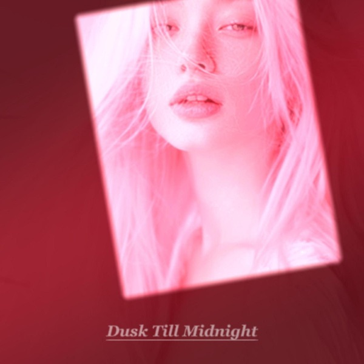

Single · November 4, 2026
Velvet Midnight, Goodbye Sadness
Three songs for the moment a goodbye becomes a habit.
- Tracks
- 3
- Runtime
- 11:31
- Genre
- Bedroom Pop / Dark Alternative R&B
- Label
- 13409928 Records DK
Dark Alternative R&B · Bedroom Pop
Forty-nine songs for the hours between dusk and midnight. Six releases of slow-burn R&B, bedroom pop and after-hours quiet — written for 2 a.m., night drives, and the long way home.

Latest release · Single
Three songs for the moment a goodbye becomes a habit. Released November 4, 2026 — 3 tracks, 11:31.
Discography
Three albums, two EPs and a single — newest first. Pick one to read its track list, or search all 49 songs below.
Full catalog
The complete 49-song catalog with recording codes. Search a title, an album, a mood — or an ISRC.
49 of 49 tracks
No tracks match that search.
Release by release
Newest first. Each track links straight to its YouTube video and Apple Music page.
Single · November 4, 2026
Three songs for the moment a goodbye becomes a habit.
EP · October 14, 2026
A tangle of whispers, orbits and slow confessions.
EP · September 17, 2026
Six songs about gravity — the soft kind, the kind you agree to.
Album · September 11, 2026
Lavender air, glass shadows, a tide that never quite arrives.
Album · September 3, 2026
Eleven songs that keep the lights low and the clock slow.
Album · August 8, 2026
The first record: thirteen rooms after everyone has gone to bed.
About
Dusk Till Midnight is a dark alternative R&B and bedroom pop project. The songs live in the hours the name suggests — after the day has let go and before the night settles — where slow tempos, close vocals and synth haze do most of the talking.
The catalogue began in August 2026 and now runs to six releases: three albums, two EPs and a single, 49 tracks in total. Every song is written to be heard quietly, and most of them are about the same thing: wanting something that is already leaving.
Tracks are released through the label 13409928 Records DK, distributed by DistroKid, and published to every major streaming service. Recording codes (ISRCs) for all 49 songs are listed in the catalog above.
This site publishes Schema.org data (MusicGroup, MusicAlbum, MusicRecording) and an llms.txt summary so search engines and AI assistants can cite the discography accurately.
Listen
Every release is on Spotify, Apple Music and everywhere else. Spotify, Apple Music and the “all platforms” links below are the official ones.
Art tracks, lyric videos and full-album uploads live on the official channel.